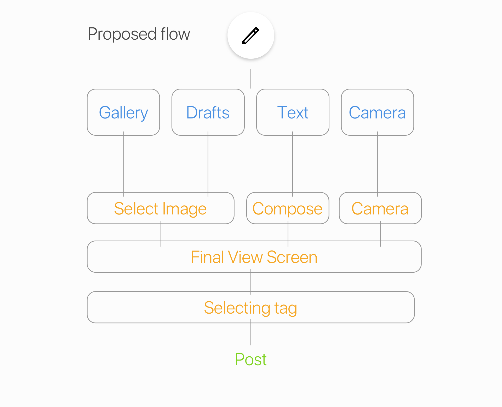
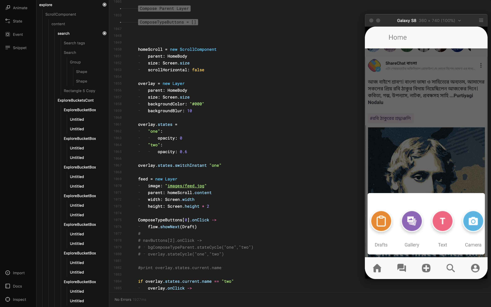

As the untapped market of India is gaining the attention of international investors, ShareChat is one of the leading companies to make a product for the vernacular audience in India’s tier 3 population.ShareChat is a vernacular social media targeting the Indian audience.
After failing in 13 startup attempts, the hard work of 3 IIT Kanpur Alumni got the shape of ShareChat. They recently got funded by big names in investment, receiving investments of around $100 Million, evaluating the company at $400 Million!
My role: **I joined the team as the UI/UX Design intern on 14th May, and was blown away with the growth rate of the company. And as they got a new funding, they started to expand the team, with work on the product being the main motive.
I worked with the design team and worked upon the User Creation Process. The app was a platform for non-English people to share and consume content, but most of the content was not being generated by the people themselves. According to data, only 2% of the people registered were generating their own content, every other person was there to just consume the content.
Starting with initial research about the product, the audience and the process, I came across many vital things, which helped in later stages.
User is the king, data is the dictator
Every decision made, from micro level to c-suite level, was based on solid data, interpreted correctly. I had no idea whatsoever that having the data was not that important until you interpreted it correctly. So, I started learning some tools for the proper data analysis. I got my hands on CleverTap, making funnels, flows and retention cohorts. As you can see, I did not make any assumptions of my own, like the UI being bad, or the flow being broken, I went straight to the data. I tried to figure out what could be done about the user generation of content, what was the reason behind not making content, or publishing the content. Well, we got to know where were we dropping the most users. They were the ones who first clicked on the add button. Also, I tried to grasp the data about the percentage of every type of data, and got to know that images were the most, and audios were the least. Other than that, the product team told me that most of the users came for consuming, and never even thought about contributing. And those who were posting the content, did because of the number of followers, likes and views. One last thing that came into my notice was that the flow of posting was not efficient. It was confusing, too many steps and not much of a pleasant flow.
User Personas are the worst for Indian users.
This was the second biggest bummer for me, as I thought that having a good user persona is essential for the design to work efficiently. But, as my mentor told me and gave me the reason for not using user personas in ShareChat, it made more and more sense to me. He told me that the main role of user persona is to have your target audience’s details in one person, so that you can judge your product and how the users will react to your designs. But, in India, the diversity of culture and geography is so vast that to imbibe every Indian into one persona is impossible and insensible. Not only that, it is very difficult to imbibe Indians into double digit numbers of personas. And to have these many personas and to maintain them, is not the most efficient way. Instead, using this energy and resources into actually having small hypothesis and experimenting and A/B testing it, first, gives you far efficient results, as you are actually going into the market and testing it with actual users, and secondly, is less time consuming and frustrating, as you don’t have to assume the customers and maintain them.
KPI is the key
I will be honest with you, I had no idea what KPI was until I started working with the team. KPI is the acronym for Key Performance Index. It is the basis, on which you will decide whether your experiment is successful or not. Choosing the correct KPI is of utmost importance. Let me take an example to explain it better to you. For a startup, growth is everything, and according to your startup, you define the basis of defining growth. So, for example, you planted a tree, and you defined the success of your efforts based on the height of the plant in the future. But, if the plant is of watermelon, it won’t be having any height, but instead will ripe into a ton of watermelons that you can eat. So, even though, your design is great for your users, you will never be able to find out its success, if you don’t choose the correct metric. In the internship, I chose the metric as the growth in the user’s percentage and the percentage of UGC created. Well, obviously, our final goal was to increase the growth rate of the product, but that would not be as good of a metric to judge the product.
As I told you before, the user personas were not the way. But I had to have at least some knowledge about our user base. The data was there to serve me. ShareChat had the most audience in the southern part of India, the DAU (Daily Active Users) were around 6 million at the time of my joining. Further, they were mostly living in the tier 3 cities and villages. They didn’t know the English language, and the primary language used in their daily life was the local language. Also, I came to know that they were not aware of the internet until Jio (a telecommunication company) came out and reached the small towns, at around 2016-17.
The App ecosystem
I came to know about a thing called app ecosystem, I don’t know if it’s useful for each product or company, but it was vital in ShareChat, as our users were new to the internet. They only used some apps, mostly Whatsapp, Facebook and YouTube. When I first heard this information, I didn’t know what to do with it, but as my mentor started explaining it to me, it clicked me. The basic design principle of UI, the familiarity, that our eyes love seeing familiar and simple things. This helped me in designing the UI, interactions and placement decisions of various features.
I took a basic approach of task completion with Human Computer Interaction in mind. I divided each problem into tasks that needed to be completed by the user, pinned the pain points, and found vital solutions for those tasks.
Problems → Tasks → Solutions → Interfaces
We had a lot going on, but my main project during the internship was to increase the number of creators.
I converted the problem into the task that users wanted to complete.
The user wanted to SHARE their content on ShareChat.
No more, no less. So I started digging into the current interaction, which had way too much cognitive load and hard to understand to the conventional user of ShareChat.
The major problems were:
Restructuring the Flow There were following discrepancies in the current flow:

To make it more user friendly, we proposed the above given flow. In this, we would ask the users up front, what they wanted to post. This would make 4 different pipelines, for 4 different task. One major thing added was the final view screen. This would show how the user’s post would look like. This would then help in reducing the cognitive load from user’s mind. I have broken down my solution step by step.
The Compose Interaction: Currently, the compose button was at the bottom right, just like button. Tapping that would open the text composing screen, with all other options at the bottom. This was biased towards creating text heavy posts. But, according to data, the number of text posts were least.So, we decided to give each type of post an equal priority. Also, as the whole navigation flow was revamping, the compose button would be at the centre, more centric and focused. So, our proposed UI was something like this.
The right one was chosen, due to the similarity with Whatsapp’s attach file interface.
The Text Compose Screen: Next up was the text compose screen. Currently, the process of making a text post was:
We revamped the whole process, giving every feature upfront, and not distributing it over different steps.
One big feature added was the paste clipboard button. This was because the data told that most of the people paste the text instead of writing it. Also, every feature was at the same screen, which would remove the unnecessary steps.
The Gallery Screen: There was no initial gallery before, the app used the default gallery, which would reduce our control over the experience. So, we decided to add our own gallery screen.
The full post view: This was a major change in the flow, as people had no idea how the post was looking and what more can be done. This would give the user a sense of his/her creation. Also, this would serve as one portal to every feature. You can reach any feature and do everything from this screen.
The tag selection process: This was the most important thing in the ‘compose’. In the app, each post was given a particular tag, which would further make the post inside one of the many buckets/ categories. So, this was important.
We did some pretty good brainstorming and tried to explore as many variations as possible.
In the final UI, these 2 UI interactions went for A/B Testing.
After this, I made a prototype in Framer. Framer was a new tool for me, it used CoffeeScript, and had a huge community for FAQs and doubts. So, I started learning Framer and made some dummy prototypes.

I had developed a prototype, but it was not responsive, neither it had dynamic data, everything was hardcoded into the app. Well, according to me, it was the best thing on Earth. But my mentor told me to level up this stupid, not-so-good prototype.
Discouraged, I started exploring, I came to know a basic concept used in coding, the object oriented programming. Well, I started learning how to make a class, how to make instances, and it would benefit me for my prototyping. So, I scraped the whole prototype, and I started again, from scratch. I worked on it for couple of weeks. And finally, it was complete. This was responsive, had dynamic data fetched from a JSON file, was a fully functional working prototype.
https://framer.cloud/DhPsB/
Testing: After completing my prototype, we started testing our hypothesis, and tried to gain reactions from users as well as employees. We were able to test it with around 50+ people, in which we had 3 power-users of ShareChat and many regular users.
Results: Our testing results were positive, we got some great feedback, which I would consider a huge success.
It was an incredible experience for me at ShareChat. This internship helped me a lot with data analysis and how it helps in design, user flows, how to rapidly test and improvise, how to not only think of users but also the technical point of view, and the power of prototyping! I would like to thanks Sohil sir, Ronak, Chetan, Siva, Likith and Kush.
Cheers!